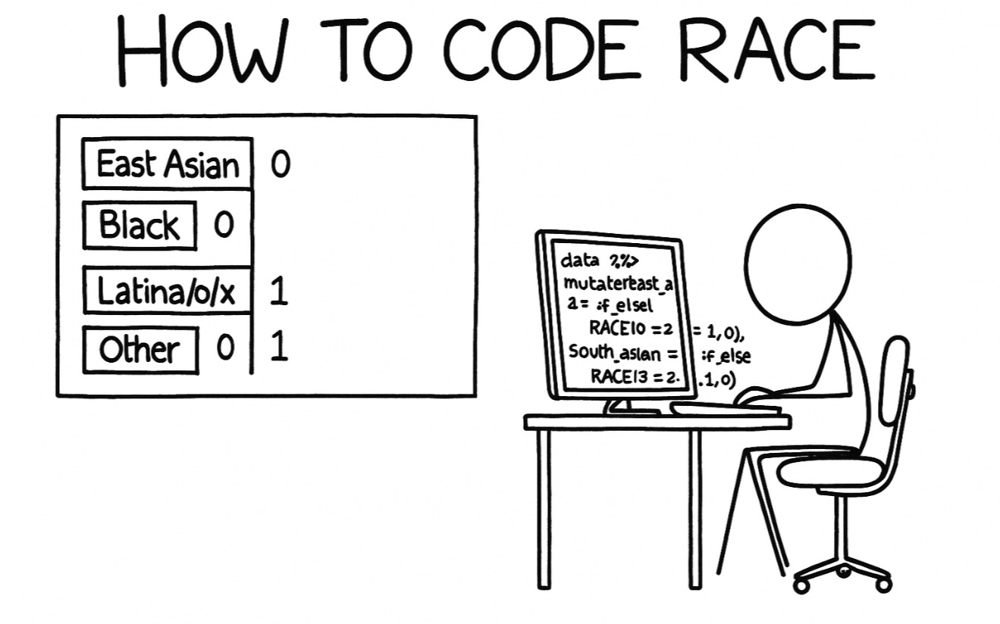

This post will show several ways of race coding in quantitative social science research.

Introduction
When conducting social science research, especially in critical quantitative studies, race is a sensitive variable that requires careful consideration. Traditional approaches to coding race often fall short when attempting to capture the complex realities of students who identify with multiple racial categories. This tutorial will explore three different methods for handling race variables in your analyses, each method has advantages and limitations.
The Traditional Way: Categorical Coding
The traditional approach treats race as a single categorical variable with mutually exclusive categories such as White, Black, Asian, Hispanic, Multiracial, and Other. This method forces each participant into one category, even if they identify with multiple racial groups.
Following is a simulated dataset to demonstrate this approach:
library(dplyr)library(ggplot2)library(car)set.seed(123)#Simulate traditional categorical race datan <-500traditional_data <-data.frame(student_id =1:n,race_traditional =sample(c("White", "Black", "Asian", "Hispanic", "Multiracial", "Other"), n, replace =TRUE, prob =c(0.45, 0.15, 0.20, 0.12, 0.06, 0.02)),college_gpa =rnorm(n, mean =3.2, sd =0.5),science_identity =rnorm(n, mean =4.0, sd =1.2))traditional_data$science_identity[traditional_data$race_traditional =="Asian"] <- traditional_data$science_identity[traditional_data$race_traditional =="Asian"] +0.3head(traditional_data)
student_id race_traditional college_gpa science_identity
1 1 White 3.012199 5.846116
2 2 Black 2.919062 3.868348
3 3 White 3.028041 4.613765
4 4 Hispanic 3.245248 4.256750
5 5 Multiracial 3.999254 3.776655
6 6 White 3.155717 3.855527
table(traditional_data$race_traditional)
Asian Black Hispanic Multiracial Other White
92 77 55 27 12 237
#Check the factor levels - this determines the reference grouplevels(factor(traditional_data$race_traditional))
# By default, R uses alphabetical order, so "Asian" would be the reference group#Explicitly set White as reference group for clearer interpretationtraditional_data$race_traditional <-factor(traditional_data$race_traditional, levels =c("White", "Asian", "Black", "Hispanic", "Multiracial", "Other"))# Confirm White is now the reference group (first level)levels(traditional_data$race_traditional)
#Linear regression with traditional categorical race variabletraditional_model <-lm(science_identity ~ race_traditional + college_gpa, data = traditional_data)summary(traditional_model)
Call:
lm(formula = science_identity ~ race_traditional + college_gpa,
data = traditional_data)
Residuals:
Min 1Q Median 3Q Max
-3.1993 -0.8330 0.0016 0.7314 3.7727
Coefficients:
Estimate Std. Error t value Pr(>|t|)
(Intercept) 4.13485 0.35884 11.523 < 2e-16 ***
race_traditionalAsian 0.40274 0.15044 2.677 0.00767 **
race_traditionalBlack 0.01130 0.16081 0.070 0.94399
race_traditionalHispanic 0.04394 0.18348 0.240 0.81082
race_traditionalMultiracial 0.05976 0.24887 0.240 0.81032
race_traditionalOther -0.35093 0.36377 -0.965 0.33516
college_gpa -0.03989 0.10991 -0.363 0.71683
---
Signif. codes: 0 '***' 0.001 '**' 0.01 '*' 0.05 '.' 0.1 ' ' 1
Residual standard error: 1.224 on 493 degrees of freedom
Multiple R-squared: 0.01832, Adjusted R-squared: 0.006373
F-statistic: 1.533 on 6 and 493 DF, p-value: 0.1652
#Additional analyses# ANOVA for science identity by raceanova_result <-aov(science_identity ~ race_traditional, data = traditional_data)summary(anova_result)
Df Sum Sq Mean Sq F value Pr(>F)
race_traditional 5 13.6 2.718 1.817 0.108
Residuals 494 739.0 1.496
Support Standard analyses: Compatible with ANOVA, chi-square tests, and most statistical procedures.
Clear group comparisons: Straightforward interpretation of group differences.
Disadvantages
Reference group dependency: Results are interpreted relative to a chosen reference category (typically White), which can reinforce hierarchical thinking about race.
Lmited representation: Students identifying as both White and Hispanic, or Black and Asian, are lumped into a generic “Multiracial” category. This “Multiracial” category obscures the specific combination of racial identities.
Alternative Way 1: Binary Coding
Dummy coding creates separate binary variables for each racial category, allowing students to be coded as belonging to multiple groups simultaneously.
Let’s see a simulated case.
#Create dummy-coded race variablesdummy_data <-data.frame(student_id =1:n,college_gpa =rnorm(n, mean =3.2, sd =0.5),science_identity =rnorm(n, mean =4.0, sd =1.2))#Create binary race variables (allowing multiple identities)dummy_data$white <-sample(c(0, 1), n, replace =TRUE, prob =c(0.6, 0.4))dummy_data$black <-sample(c(0, 1), n, replace =TRUE, prob =c(0.85, 0.15))dummy_data$asian <-sample(c(0, 1), n, replace =TRUE, prob =c(0.75, 0.25))dummy_data$hispanic <-sample(c(0, 1), n, replace =TRUE, prob =c(0.85, 0.15))#Add a multiracial category for students identifying with multiple groupsdummy_data$multiracial <-0#Ensure some students have multiple identitiesmultiracial_ids <-sample(1:n, size =30)dummy_data$asian[multiracial_ids[1:15]] <-1dummy_data$white[multiracial_ids[1:15]] <-1dummy_data$multiracial[multiracial_ids[1:15]] <-1#mark as multiracialdummy_data$black[multiracial_ids[16:30]] <-1dummy_data$hispanic[multiracial_ids[16:30]] <-1dummy_data$multiracial[multiracial_ids[16:30]] <-1#mark as multiracialdummy_data$science_identity[dummy_data$asian ==1] <- dummy_data$science_identity[dummy_data$asian ==1] +0.3dummy_data$total_races <- dummy_data$white + dummy_data$black + dummy_data$asian + dummy_data$hispanic + dummy_data$multiracial
Potential Analysis with Binary Race Coding
Regression analysis
t.test
#Linear regression with dummy-coded race variablesdummy_model <-lm(science_identity ~ white + black + asian + hispanic + multiracial + college_gpa, data = dummy_data)summary(dummy_model)
Call:
lm(formula = science_identity ~ white + black + asian + hispanic +
multiracial + college_gpa, data = dummy_data)
Residuals:
Min 1Q Median 3Q Max
-3.1157 -0.7986 -0.0094 0.7565 3.4763
Coefficients:
Estimate Std. Error t value Pr(>|t|)
(Intercept) 4.50824 0.34959 12.896 <2e-16 ***
white 0.16506 0.10748 1.536 0.1252
black -0.04779 0.14274 -0.335 0.7379
asian 0.22991 0.11929 1.927 0.0545 .
hispanic -0.07766 0.14697 -0.528 0.5975
multiracial 0.18770 0.24330 0.771 0.4408
college_gpa -0.17517 0.10467 -1.673 0.0949 .
---
Signif. codes: 0 '***' 0.001 '**' 0.01 '*' 0.05 '.' 0.1 ' ' 1
Residual standard error: 1.162 on 493 degrees of freedom
Multiple R-squared: 0.02285, Adjusted R-squared: 0.01096
F-statistic: 1.921 on 6 and 493 DF, p-value: 0.07568
#Analysis of White-Asian students specificallywhite_asian <- dummy_data[dummy_data$white ==1& dummy_data$asian ==1, ]mean(white_asian$science_identity, na.rm =TRUE)
[1] 4.220716
#Compare with single-race students science identity vs multi-race identitysingle_race <- dummy_data[dummy_data$total_races ==1, ]multi_race <- dummy_data[dummy_data$total_races >1, ]t.test(single_race$science_identity, multi_race$science_identity)
Welch Two Sample t-test
data: single_race$science_identity and multi_race$science_identity
t = -0.2536, df = 302.83, p-value = 0.8
alternative hypothesis: true difference in means is not equal to 0
95 percent confidence interval:
-0.2799823 0.2160553
sample estimates:
mean of x mean of y
4.137296 4.169259
Advantages
Captures multiple identities: Students can be coded as belonging to multiple racial groups.
Specific comparisons: Researchers can examine the unique characteristics of specific multiracial combinations.
Flexible analysis: No forced categorization, better represents how students actually identify.
Disadvantages
Inflated sample size: The sum of all racial categories exceeds the actual number of participants.
Statistical complications: Traditional categorical tests (chi-square) are no longer appropriate.
Interpretation complexity: More difficult to interpret main effects when students belong to multiple categories.
Multicollinearity concerns: Racial variables may be correlated with each other.
Alternative Way 2: Effect Coding
Mayhew & Simonoff (2015) propose effect coding as alternative approach that doesn’t rely on a reference group and better handles students who check multiple racial boxes.
Reference: Mayhew, M. J., & Simonoff, J. S. (2015). Effect Coding as a Mechanism for Improving the Accuracy of Measuring Students Who Self‑Identify with More than One Race. Research in Higher Education, 56(6), 571–600.
Statistical Idea
Effect coding (also known for sum-to-zero coding) forces the set of race‑indicator columns for each student to sum to 0. When a respondent can select more than one race, Mayhew & Simonoff (2015) recommend fractional weights so the rule still holds.
Rule of thumb If a student selects m race boxes, give each selected category a weight of 1 / m. The omitted reference column automatically gets the negative of the row‑sum, keeping totals at 0.
Mini example: three race categories (A, B, C)
With three categories we need only two coded columns (EA and EB). The table below reproduces the logic in Mayhew & Simonoff’s Table 1 and shows how multi‑race selections receive fractional weights.
Selected Races
\(E_A\)
\(E_B\)
Expected Mean of y
A
\(1\)
\(0\)
\(b_0 + b_A\)
B
\(0\)
\(1\)
\(b_0 + b_B\)
C
\(-1\)
\(-1\)
\(b_0 - b_A - b_B\)
A & B
\(1/2\)
\(1/2\)
\(b_0 + \frac{b_A}{2} + \frac{b_B}{2}\)
A & C
\(0\)
\(-1/2\)
\(b_0 - \frac{b_B}{2}\)
B & C
\(-1/2\)
\(0\)
\(b_0 - \frac{b_A}{2}\)
A, B & C
\(0\)
\(0\)
\(b_0\)
Intercept (b0) is the grand mean across all racial groups.
Each coefficient (bA, bB) is that group’s deviation from the grand mean.
Because rows always add to 0, no single group is the “reference group”.
Generalising to k categories
contr.sum(k) makes the k – 1 columns automatically. It sets up the k − 1 contrast vectors for single-race categories. The last category (by default) is omitted and represented as the negative sum of the other categories’ contrasts.
Apply Effect Coding and Run the Regression
#Use the same traditional categorical race dataeffect_data <- traditional_data#Convert race_traditional to factor for effect codingeffect_data$race_traditional <-factor(effect_data$race_traditional)table(effect_data$race_traditional)
White Asian Black Hispanic Multiracial Other
237 92 77 55 27 12
#Create effect-coded contrasts#This will use "Other" as the omitted category (coded as -1 for all contrasts, like C in the above example)contrasts(effect_data$race_traditional) <-contr.sum(6)#contrasts(effect_data$race_traditional) <- contr.sum(length(levels(effect_data$race_traditional))) - same above#Check the contrast matrixcontrasts(effect_data$race_traditional)
So “Other” is \(-0.379\) points below the grand mean, which is also the lowest science identity group.
Advantages
No reference group: Coefficients represent deviations from the grand mean, avoiding hierarchical comparisons.
Clearer interpretation: Effects are interpreted relative to the overall sample mean.
Reduced bias: Eliminates the arbitrary choice of reference group that can influence interpretation.
Disadvantages
Interpretation challenges: In multiracial applications, may still obscure differences between specific combinations (e.g., White-Black vs. Black-Asian students)
Think further
Can effect coding only be applied to mutually exclusive racial/ethnic categories?
Short answer: No.
Long answer: Effect coding is not limited to mutually exclusive racial or ethnic categories. In fact, according to Mayhew & Simonoff (2015), effect coding is especially well-suited for situations where students can identify with multiple racial/ethnic groups.
“Effect coding and its application to multi-raced categories… allows students to be analyzed based on their self-identified multi-raced selection. In addition, effect coding allows a more accurate assessment of the slopes representing any one racial group by including the partial estimates for this racial group when it is selected as part of a bi- or multi-raced category.”
— Mayhew & Simonoff (2015)
But:
If students are allowed to select multiple racial/ethnic identities in a “check all that apply” survey, the number of possible combinations grows exponentially. For example, if there are 4 races — White, Asian, Black, and Hispanic — a student might identify with:
A single race (e.g., White)
A bi-racial combination (e.g., White and Asian)
A tri-racial combination (e.g., White, Asian, and Black)
All four races
The total number of non-empty race combinations from 4 categories is:
\[
2^4 - 1 = 15
\]
This includes all possible non-empty subsets of the 4 categories.
All possible combinations from 4 Races:
#
Combination Type
Races Selected
1
Pure
White
2
Pure
Asian
3
Pure
Black
4
Pure
Hispanic
5
Bi-racial
White + Asian
6
Bi-racial
White + Black
7
Bi-racial
White + Hispanic
8
Bi-racial
Asian + Black
9
Bi-racial
Asian + Hispanic
10
Bi-racial
Black + Hispanic
11
Tri-racial
White + Asian + Black
12
Tri-racial
White + Asian + Hispanic
13
Tri-racial
White + Black + Hispanic
14
Tri-racial
Asian + Black + Hispanic
15
Four-race combination
White + Asian + Black + Hispanic
Following is the effect coding contrast matrix with all coefficients expressed as fractions and the corresponding expected value expressions E(y), following the logic from Mayhew & Simonoff (2015). We’re using:
Races: White (W), Asian (A), Black (B), Hispanic (H)
Hispanic (H) is the omitted group, so its effect is implicitly coded via \(-1\)s or complementary fractions.
As the number of race categories increases, the total combinations grow rapidly:
\[
\text{Combinations} = 2^k - 1
\]
For 5 races: \(2^5 - 1 = 31\)
For 6 races: \(2^6 - 1 = 63\)
This leads to overfitting, reduced interpretability, and estimation instability.
Maybe this time you want to just to consider effect coding with categorial race variables, just like our r example here.
Summary
Which Methods Should I Use?
The choice of coding method should ultimately depend on your research questions:
If your research question focuses on comparing specific racial groups to a meaningful reference category (e.g., comparing minority groups to White students), traditional dummy coding may be appropriate.
If you want to understand the unique experiences of students with multiple racial identities, dummy coding with binary race variables allows the most flexibility.
If you want to avoid the hierarchical implications of reference groups and focus on how each group differs from the overall population, effect coding is preferable.
If your research question requires understanding specific multiracial combinations (e.g., White-Asian vs. Black-Hispanic experiences), consider creating specific categorical variables for the combinations of interest.
Final Considerations
Regardless of the coding method chosen, researchers should:
Be transparent about your coding decisions and rationale.
Consider the theoretical implications of your chosen approach.
Validate your approach with sensitivity analyses when possible.
Acknowledge the limitations of your chosen method in the discussion.
Remember that no single approach perfectly captures the complexity of racial identity. The goal is to choose the method that best serves your research questions while remaining sensitive to the lived experiences of the students you’re studying.